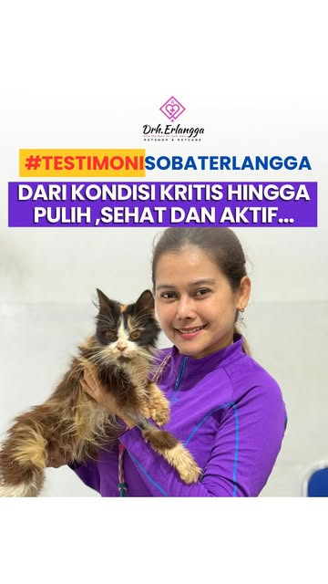
#TestimoniSobatErlangga
Dari kondisi kritis hingga pulih, sehat, dan aktif
Cerita pemulihan pasien yang dibagikan klinik di Instagram. Klinik rutin memuat testimoni pemilik hewan lewat tagar ini.
Tonton di InstagramDokter hewan · Sidoarjo, Jawa Timur
Percayakan perawatan kucing dan anjing Anda kepada Drh. Erlangga dan tim di Sukodono, Sidoarjo. Kami melayani pemeriksaan kesehatan, konsultasi dokter, vaksinasi, grooming, pet hotel, hingga home visit.
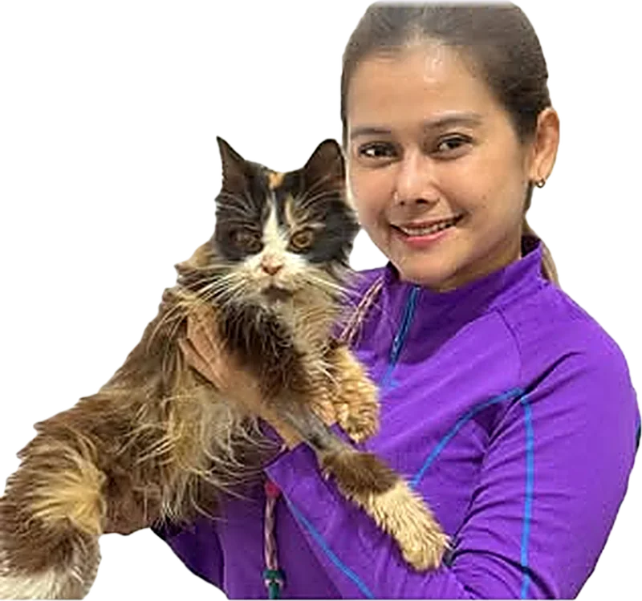
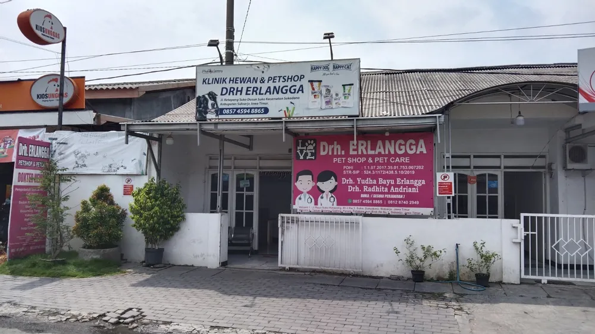
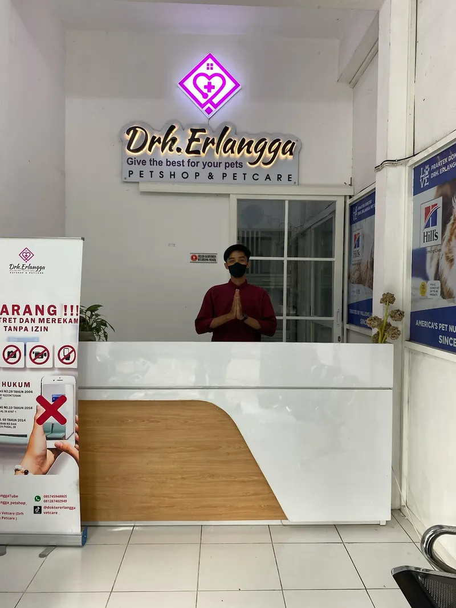
Anabul berarti anak bulu, sebutan akrab untuk hewan kesayangan. Daftar layanan ini mengikuti papan nama klinik. Pilih yang paling mendekati, lalu tanyakan lewat WhatsApp.
Pengobatan untuk semua hewan, termasuk terapi nebulizer. Dokter memeriksa dan menjelaskan hasilnya.
Tanya lewat WhatsApp →Tanyakan jadwal dan jenis vaksin yang sesuai dengan usia dan kondisi anabul.
Tanya lewat WhatsApp →Layanan yang paling sering disebut dalam ulasan, terutama sterilisasi kucing.
Tanya lewat WhatsApp →Tindakan bedah oleh dokter yang mencantumkan surgery sebagai bidang spesialisasinya.
Tanya lewat WhatsApp →Pemeriksaan penunjang dengan USG untuk membantu dokter menegakkan diagnosis.
Tanya lewat WhatsApp →Perawatan inap untuk anabul yang perlu dipantau dokter.
Tanya lewat WhatsApp →Penitipan kucing saat Anda bepergian. Tanyakan ketersediaan dan syaratnya.
Tanya lewat WhatsApp →Masalah kulit dan bulu lewat dermatologi, serta penyakit dalam lewat interna.
Tanya lewat WhatsApp →Grooming terapi di klinik, serta petshop untuk kebutuhan harian anabul.
Tanya lewat WhatsApp →Dokter di balik klinik
Drh. Yudha Bayu Erlangga dan Drh. Radhita Andriani melayani pasien dengan janji temu, Selasa sampai Minggu.
Pasien menggambarkan dokternya ramah dan mau menjelaskan. Topik "dokter ramah" muncul 261 kali di ulasan klinik Suko.
Ulasan Google Maps, per 1 November 2026
Cuplikan ulasan asli di Google Maps. Rating 4,9 dari 1.182 ulasan di Suko dan 5,0 dari 473 ulasan di Sidokare Asri.
Alhamdulillah so far i had great experience with the doctors and team. Humble, heartwarming, welcoming and easy going doctor. As if we are talking to our friend.
The doctor is so kind. The price is really reasonable and there is a place for grooming too.
Among all of the vets I've visited, this one's the best in terms of service, price, and medical diagnosis.
One time i came here the place is nice and well arranged. The doctors are very nice.
Top grade.

#TestimoniSobatErlangga
Cerita pemulihan pasien yang dibagikan klinik di Instagram. Klinik rutin memuat testimoni pemilik hewan lewat tagar ini.
Tonton di InstagramTiga langkah sebelum Anda berangkat. Percakapan di ponsel hanya contoh untuk menggambarkan alurnya.
Edukasi perawatan anabul dari akun resmi kami. Akun Instagram klinik terverifikasi dengan 5.978 pengikut.
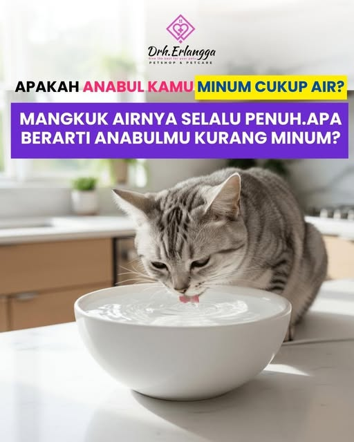
Drh. Erlangga Petcare@drh.erlangga_petshop_petcareApakah anabul kamu minum cukup air? Mangkuk airnya selalu penuh, apa berarti anabulmu kurang minum?Baca di Instagram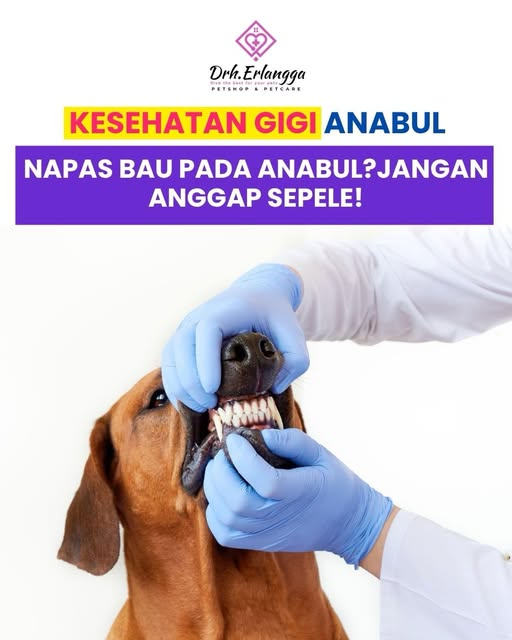
Drh. Erlangga Petcare@drh.erlangga_petshop_petcareKesehatan gigi anabul. Napas bau pada anabul? Jangan anggap sepele!Baca di Instagram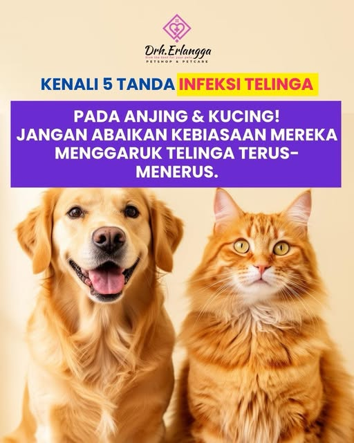
Drh. Erlangga Petcare@drh.erlangga_petshop_petcareKenali 5 tanda infeksi telinga pada anjing dan kucing. Jangan abaikan kebiasaan menggaruk telinga terus-menerus.Baca di Instagram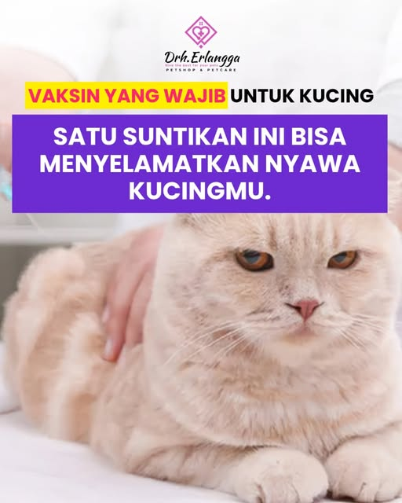
Drh. Erlangga Petcare@drh.erlangga_petshop_petcareVaksin yang wajib untuk kucing. Satu suntikan ini bisa menyelamatkan nyawa kucingmu.Baca di Instagram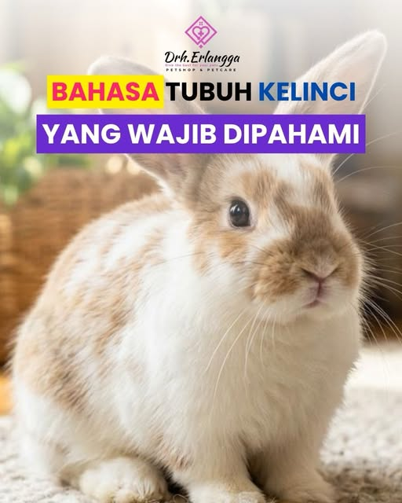
Drh. Erlangga Petcare@drh.erlangga_petshop_petcareBahasa tubuh kelinci yang wajib dipahami.Baca di Instagram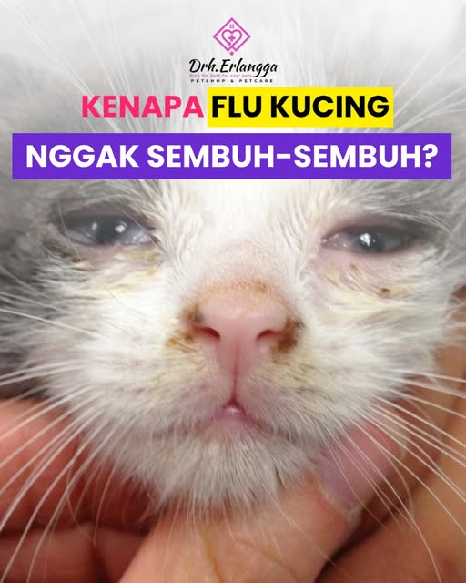
Drh. Erlangga Petcare@drh.erlangga_petshop_petcareKenapa flu kucing nggak sembuh-sembuh?Baca di InstagramKlinik melayani sesuai perjanjian, Selasa sampai Minggu. Hubungi dulu sebelum berangkat.
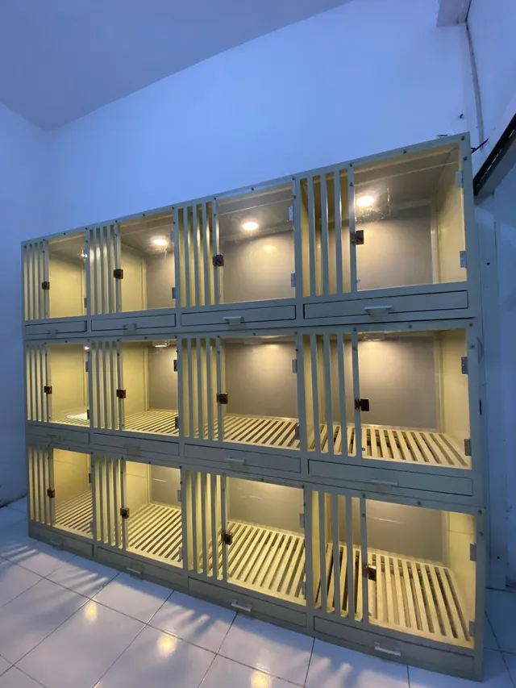
Pilih klinik untuk melihat alamat, jam, dan kontaknya.
Ceritakan keluhannya lewat WhatsApp. Praktik sesuai perjanjian, Selasa sampai Minggu.